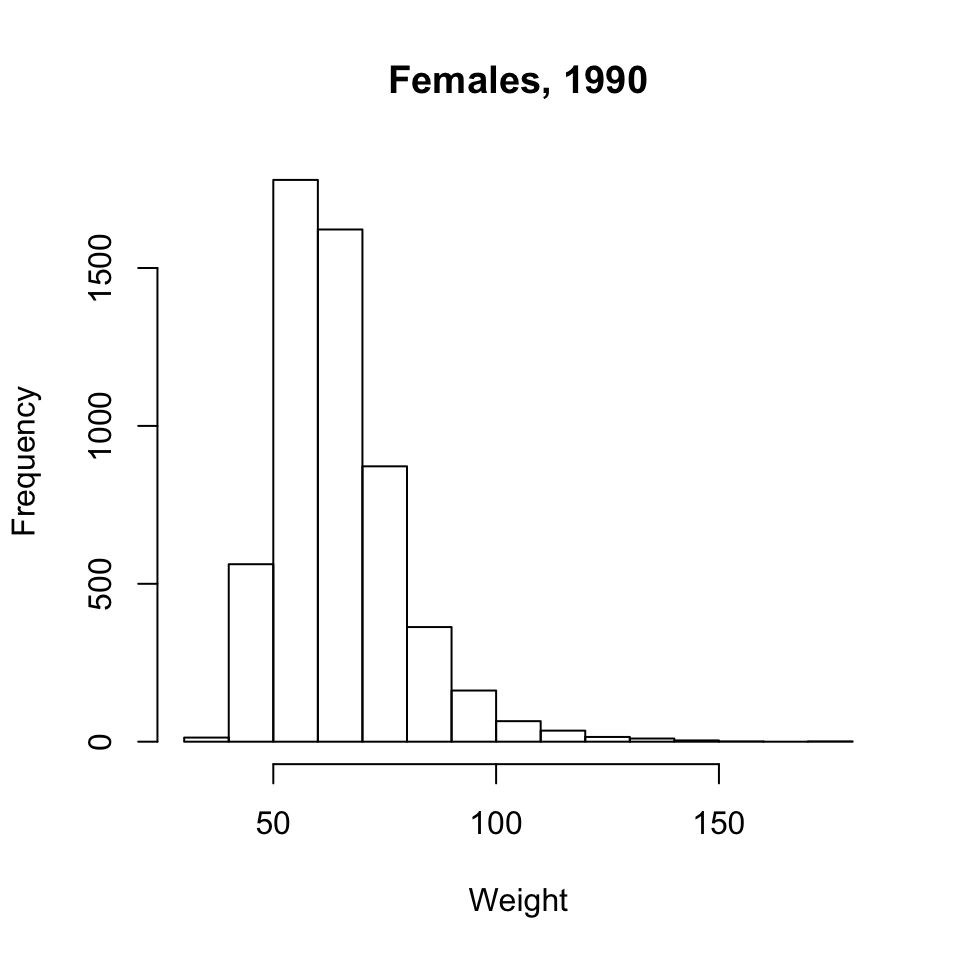
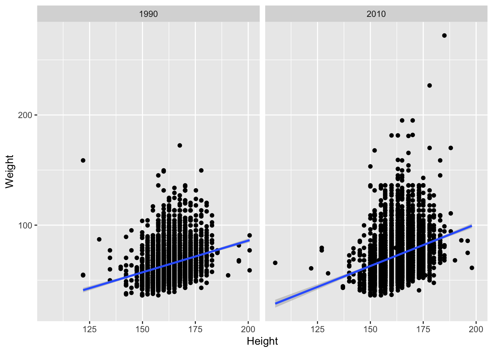
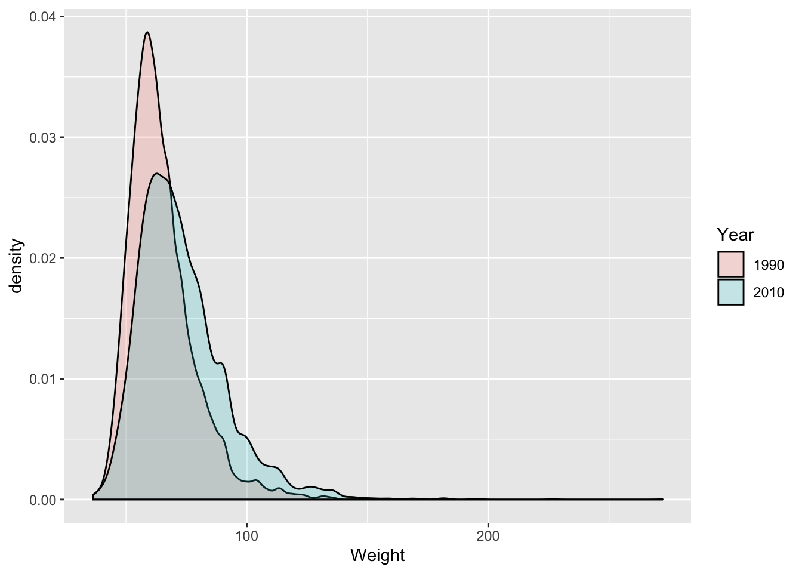

Data Input and Manipulation Exercises
Behavioral Risk Factor Surveillance System
We will explore a subset of data collected by the CDC through its extensive Behavioral Risk Factor Surveillance System (BRFSS) telephone survey. Check out the link for more information. We’ll look at a subset of the data.
First, we need to get the data. Either download the data from THIS LINK or have R do it directly from the command-line (preferred):
download.file('https://raw.githubusercontent.com/seandavi/ITR/master/BRFSS-subset.csv',
destfile = 'BRFSS-subset.csv')You can check to see the file using the Rstudio file panel or get a directory listing using dir()
Use
file.choose()to find the path to the file ‘BRFSS-subset.csv’. This is a quick-and-dirty to find a file on the computer. Store the file location into a variable calledpath.path <- file.choose()
Read the data into R using
read.csv(), assigning to a variablebrfss. Note that you can use thepathvariable in read.csv().brfss <- read.csv(path)Use command like
class(),head(),dim(),summary()to explore the data.What variables have been measured?
Can you guess at the units used for, e.g., Weight and Height?
class(brfss) head(brfss) dim(brfss) summary(brfss)Use the
$operator to extract theSexcolumn, and summarize the number of males and females in the survey usingtable(brfss$Sex). Do the same forYear, and for bothSexandYear.table(brfss$Sex)## ## Female Male ## 12039 7961table(brfss$Year)## ## 1990 2010 ## 10000 10000table(brfss$Sex, brfss$Year)## ## 1990 2010 ## Female 5718 6321 ## Male 4282 3679with(brfss, table(Sex, Year)) # same, but easier## Year ## Sex 1990 2010 ## Female 5718 6321 ## Male 4282 3679Use
aggregate()to summarize the mean weight of each group. What about the median weight of each group? What about the number of observations in each group?with(brfss, aggregate(Weight, list(Year, Sex), mean, na.rm=TRUE))## Group.1 Group.2 x ## 1 1990 Female 64.81838 ## 2 2010 Female 72.95424 ## 3 1990 Male 81.17999 ## 4 2010 Male 88.84657with(brfss, aggregate(Weight, list(Year=Year, Sex=Sex), mean, na.rm=TRUE))## Year Sex x ## 1 1990 Female 64.81838 ## 2 2010 Female 72.95424 ## 3 1990 Male 81.17999 ## 4 2010 Male 88.84657Use a
formulaand theaggregate()function to describe the relationship between Year, Sex, and Weightaggregate(Weight ~ Year + Sex, brfss, mean) # same, but more informative## Year Sex Weight ## 1 1990 Female 64.81838 ## 2 2010 Female 72.95424 ## 3 1990 Male 81.17999 ## 4 2010 Male 88.84657aggregate(. ~ Year + Sex, brfss, mean) # all variables## Year Sex Age Weight Height ## 1 1990 Female 46.09153 64.84333 163.2914 ## 2 2010 Female 57.07807 73.03178 163.2469 ## 3 1990 Male 43.87574 81.19496 178.2242 ## 4 2010 Male 56.25465 88.91136 178.0139Create a subset of the data consisting of only the 1990 observations. Perform a t-test comparing the weight of males and females (“‘Weight’ as a function of ‘Sex’”,
Weight ~ Sex)brfss_1990 = brfss[brfss$Year == 1990,] t.test(Weight ~ Sex, brfss_1990)## ## Welch Two Sample t-test ## ## data: Weight by Sex ## t = -58.734, df = 9214, p-value < 2.2e-16 ## alternative hypothesis: true difference in means is not equal to 0 ## 95 percent confidence interval: ## -16.90767 -15.81554 ## sample estimates: ## mean in group Female mean in group Male ## 64.81838 81.17999t.test(Weight ~ Sex, brfss, subset = Year == 1990)## ## Welch Two Sample t-test ## ## data: Weight by Sex ## t = -58.734, df = 9214, p-value < 2.2e-16 ## alternative hypothesis: true difference in means is not equal to 0 ## 95 percent confidence interval: ## -16.90767 -15.81554 ## sample estimates: ## mean in group Female mean in group Male ## 64.81838 81.17999What about differences between weights of males (or females) in 1990 versus 2010? Check out the help page
?t.test.formula. Is there a way of performing a t-test onbrfsswithout explicitly creating the objectbrfss_1990?Use
boxplot()to plot the weights of the Male individuals. Can you transform weight, e.g.,sqrt(Weight) ~ Year? Interpret the results. Do similar boxplots for the t-tests of the previous question.boxplot(Weight ~ Year, brfss, subset = Sex == "Male", main="Males")
Use
hist()to plot a histogram of weights of the 1990 Female individuals.hist(brfss_1990[brfss_1990$Sex == "Female", "Weight"], main="Females, 1990", xlab="Weight" )
BONUS: ggplot2
library(ggplot2)‘Grammar of graphics’
- Specify data and ‘aesthetics’ (
aes()) to be plotted - Add layers (
geom_*()) of information
Clean it by coercing Year to factor. A factor is a categorical variable. In this case, our data have only two years represented, so we will treat these two years as “groups” or categories.
brfss$Year <- factor(brfss$Year)Let’s make a couple of subsets of data to work with. First, let’s subset to get only males in 2010.
brfss2010Male = subset(brfss,Sex=='Male' & Year=='2010')and make an “only female” subset.
brfssFemale = subset(brfss,Sex=='Female')```r
ggplot(brfss2010Male, aes(x=Height, y=Weight)) +
geom_point() +
geom_smooth(method="lm")
```
<img src="data_input_and_manipulation_exercises_files/figure-html/unnamed-chunk-4-1.png" width="672" />Capture a plot and augment it
plt <- ggplot(brfss2010Male, aes(x=Height, y=Weight)) + geom_point() + geom_smooth(method="lm") plt + labs(title = "2010 Male")
Use
facet_*()for layoutsggplot(brfssFemale, aes(x=Height, y=Weight)) + geom_point() + geom_smooth(method="lm") + facet_grid(. ~ Year)
Choose display to emphasize relevant aspects of data
ggplot(brfssFemale, aes(Weight, fill=Year)) + geom_density(alpha=.2)